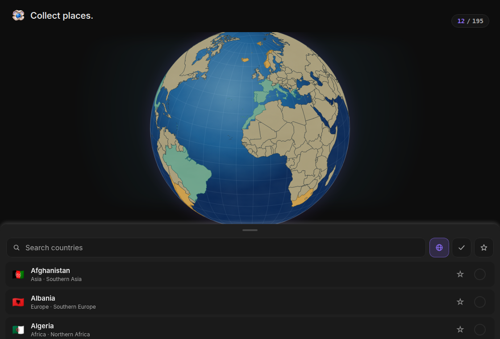
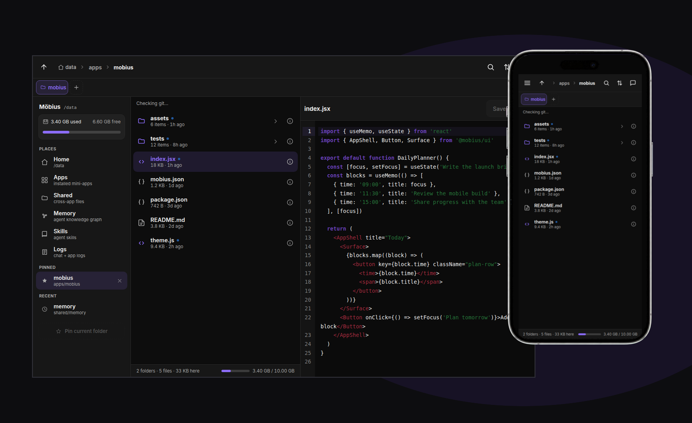
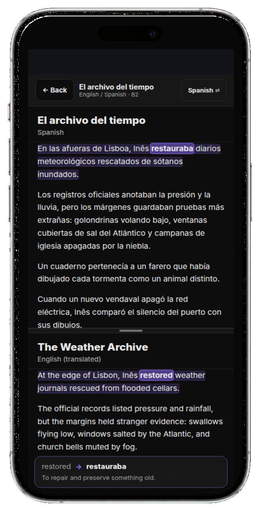
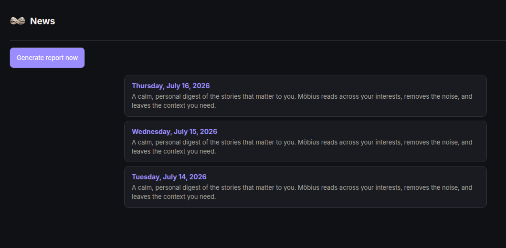
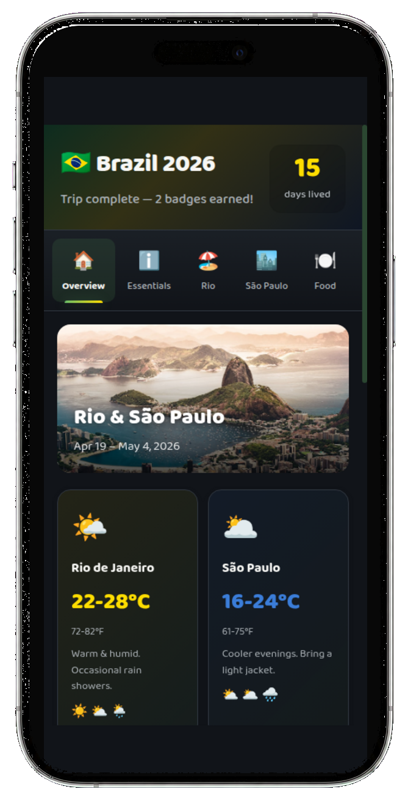
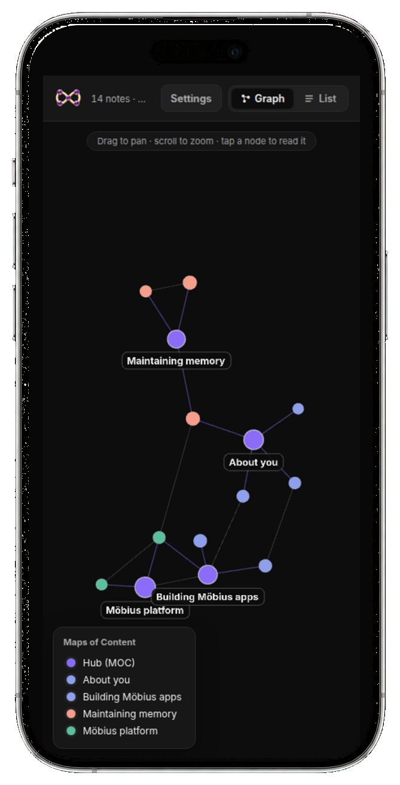

Atlas · Travel
Turn the places you have been into a living map.
Mark visited countries, save the next ones, and watch your world take shape.
Community-built AGI app platform
Möbius gives a capable coding agent a workspace it can shape. Build useful apps, open them anywhere, and improve the system through memory, reflection, and use.
Bring a ChatGPT plan with Codex access or a supported Claude Code plan. Your data stays in the deployment you control.

Start with an app. Keep shaping it with your agent.
Editor keeps the files behind your apps close at hand. Read and change the same project from a computer or phone, with an agent ready when you want help.

Browse app files, open the source, and check the state of the repository in one place.
Browse the same project from your phone and follow the work without setting up another environment.
Start with an app from the community. If it does not fit, change it or build the missing piece with your agent.

Atlas · Travel
Mark visited countries, save the next ones, and watch your world take shape.

Tandem · Language learning
Tap a word for its translation without leaving the page.

News · Daily briefing
Your agent curates a daily digest around the topics you care about.

Brazil 2026 · Personal travel
Keep plans, places, phrases, weather, and memories together.
Themes change how the workspace looks. Memory keeps useful context available in other apps, while Reflection notices work that you should not have to repeat.


Möbius gives capable agents broad control inside the workspace. Git and recovery make that power reversible, while community review turns good local changes into a stronger platform.
Turn a conversation into an app you use.
Memory and reflection surface what should work better next time.
Community review turns useful extensions into platform capabilities.

Start with one useful loop
Launch a private workspace with Codex or Claude Code, or explore the open-source platform and community apps.